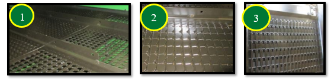
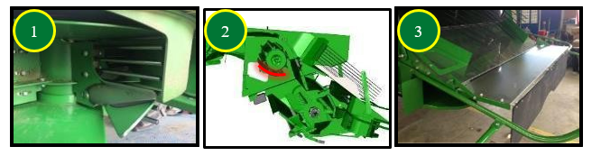

2. Réglage et inspection
2.1. Hauteur et vitesse de la chaîne du tambour du convoyeur d'alimentation
- Position du tambour avant – poignée vers le haut.
- Vitesse du convoyeur d'alimentation – 26 dents.

2.2. Vitesse du tambour d'alimentation
Basse (550 tr/min) pour les conditions normales et difficiles. Dans des conditions sèches et cassantes, la vitesse peut être abaissée à 320 tr/min en installant le kit BXE10741 (320 tr/min/770 tr/min) Cela permettra de réduire l’endommagement de la paille et de réduire la charge du caisson. Dans les conditions sèches, le pignon à 770 tr/min du kit BXE10741 peut ensuite être utilisé pour les petites céréales.

2.3. Contre-batteurs et plaques d'obturation
- Dans des conditions de battage difficiles : 3 contre-batteurs à grand fil nº 2.
- Dans des conditions de battage faciles : 3 contre-batteurs à barre ronde nº 3.
Note : Se reporter au livret d'entretien pour la procédure de mise à niveau et le calibrage à zéro des contre-batteurs (de l'avant à l'arrière), ainsi que pour l'écartement par rapport aux éléments de battage.

Les plaques d’obturation du contre-batteur limitent le flux vers le caisson de nettoyage et en ajustent la répartition.
Les plaques d'obturation du contre-batteur n° 1 (BH84534) pour les contre batteurs à grand fil permettent de régler avec précision la distribution sur le caisson de nettoyage. En cas d'utilisation de contre-batteurs à barre ronde, utiliser les plaques nº 2 (BH84535).

2.4. Grilles de séparation
- Placer les entretoises de la grille nº 1 sur le rail tournesol pour maintenir les grilles en position haute et assurer un flux constant.
- Utiliser les couvercles de la grille nº 2 uniquement si la répartition au caisson est inégale, afin de limiter le flux vers l’extérieur et réduire la charge.

2.5. Batteur d'otons et déflecteurs supérieurs réglables (suivant équipement)

Les déflecteurs supérieurs du rotor doivent être en position standard. Il est possible de les placer en position avancée uniquement pour tenter de réduire la quantité de matière sur le caisson de nettoyage.
2.6. Réglages des organes de battage
Le rotor doit être réglé sur un régime rapide.
- Conditions sèches et cassantes : Régime du rotor – 500 tr/min.
- Conditions de battage sèches et faciles : Écartement du contre-batteur – 30 mm.
Note : Ces recommandations de réglages constituent un point de départ et devront probablement être encore optimisées. Un écartement de contre-batteur allant jusqu'à 40 mm est possible dans des conditions de battage faciles.

2.7. Composants et réglages du caisson de nettoyage
Les grilles universelles nº 1 et nº 3 sont les plus utilisées. La grille nº 2 haute performance améliore la propreté de l’échantillon et réduit la charge d’otons quand le caisson limite les performances.

- Régler les diviseurs des vis nº 1 pour une répartition uniforme.
- Relever les tôles pour limiter le flux vers l’extérieur.
- Optionnel : La pré-grille réglable nº 2 peut réduire l’accumulation de tiges (selon conditions).
Avertissement : Ne pas utiliser l’extension nº 3 pour le tournesol.

- Ouverture grille à otons : 14 mm (débit normal), +2 mm avec grille haute performance.
- Extension : 0 mm (terrain plat/vallonné).
- Ouverture grille à grain : 5 mm (débit normal), +1 mm avec grille haute performance.
- Ventilateur : 780 tr/min (débit normal), à augmenter avec grille haute performance.
- Pré-grille réglable : 6 mm (selon équipement).
Note : L'utilisation du système Active Terrain Adjustment est très avantageuse, même sur terrain légèrement vallonné pour obtenir un échantillon de trémie optimal et gérer le volume d’otons.

2.8 Transport du grain
Les couvercles de vis transversale doivent être en position relevée. Le déflecteur au niveau de la vis de remplissage de la trémie à grain peut être réglé pour modifier le chargement de la trémie à grain. La position illustrée permet de charger la trémie à grain plus à droite.

2.9. Réglages des composants du système de résidus
- Monter les palettes incurvées nº 1 un segment sur deux sur l’épandeur Advanced PowerCast™.
Avertissement : Ne pas installer le couvercle nº 2 sous le tambour d’alimentation (risque d’enroulement en petites céréales).
Optionnel : Installer le ralentisseur de chute nº 3 (version Premium) pour améliorer la forme des andains et accélère le séchage.

Régler le régime du broyeur nº 1 sur élevé.
Enclencher les contre-couteaux nº 2 uniquement si nécessaire pour limiter la consommation d’énergie.

- Mettre le déflecteur de rafles nº 1 en position relevée (petites céréales).
- Régler les ailettes du déflecteur arrière ou du volet nº 2 pour optimiser la répartition des résidus.